22만평 드넓은 대지 위에 조성된 주택단지 내에서 물·바람·돌을
각각의 테마로 삼고 있는 뮤지엄입니다. 이타미 준이 지향하는 바가 가장 잘 드러난 수풍석 뮤지엄은 미술품이 전시된 일반적인 곳이 아닌 ‘명상의 공간으로서의 뮤지엄’을
제시하고
있습니다. 자연과 어울어진 이 무릉도원을 함께 느끼고자 2015년 9월부터 비오
토피아 주민회에서 개방하여 안내하고 있습니다.
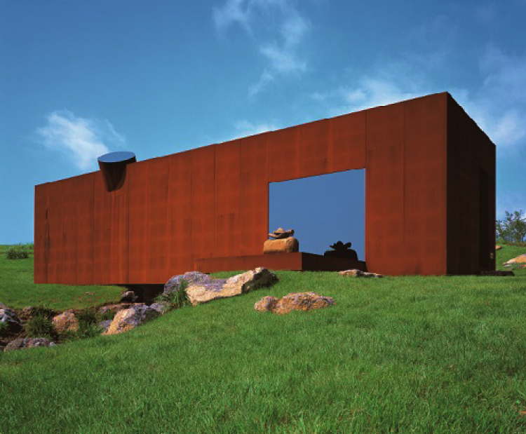
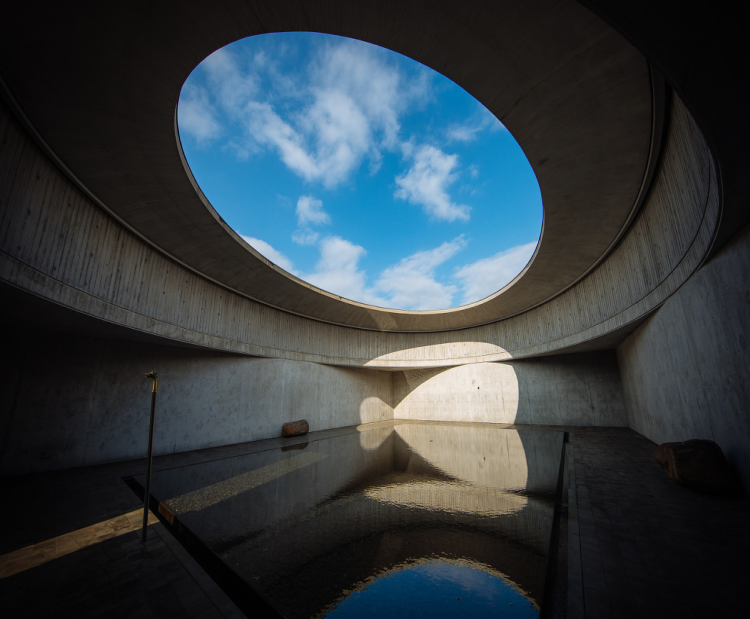
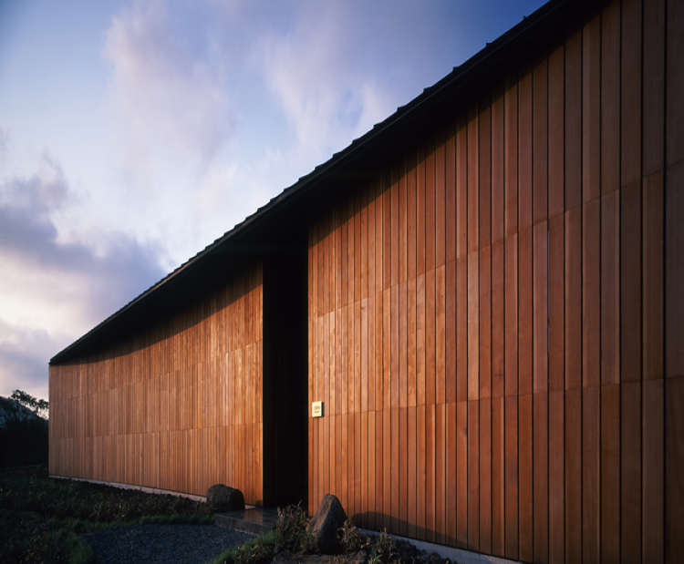
ITAMI
JUN
ARTIST
ITAMI
JUN
내가 전하고자 하는 것은 건축을 매개로 자연과 인간 사이에 드러나는 세계, 즉 새로운 세계를 보는 것이고 보이지 않는 세계를 보는 것이다.
이타미 준 itami Jun
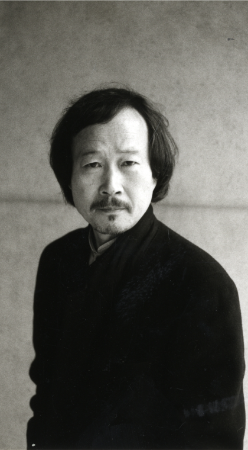
水風石 뮤지엄
제주도의 으뜸 요소인 물, 바람, 돌을 각각의 테마로 삼고 있는 공간입니다.
포도호텔을 설계한 건축가 이타미 준이 디자인한 이곳은 미술품을 전시하는 일반적인 뮤지엄이 아닌 ‘명상의 공간으로서의 뮤지엄’을 제시하고 있으며, 자연을 경험하는 그 자체로
작품이
되는 건축을 구현하였습니다.
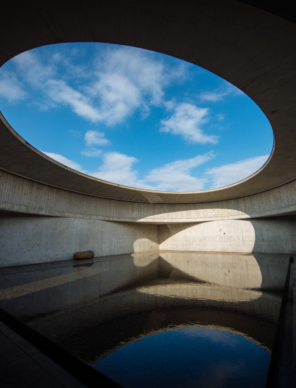
수(水) ‘물의 공간’
자세히보기
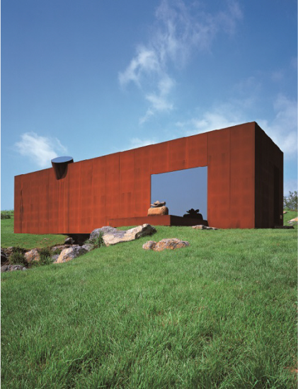
석(石) ‘돌의 공간’
자세히보기
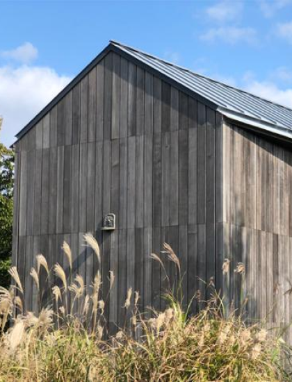
풍(風) ‘바람의 공간’
자세히보기
석(石) ‘돌의 공간’
자세히보기
수(水) ‘물의 공간’
자세히보기
풍(風) ‘바람의 공간’
자세히보기
"사람의 생명, 강인한 기원을 투영하지 않는 한 사람들에게 진정한 감동을 주는 건축물은 태어날 수 없다.
사람의 온기, 생명을 작품 밑바탕에 두는 일. 그 지역의 전통과 문맥,
에센스를 어떻게 감지하고 앞으로 만들어질 건축물에 어떻게 담아낼 것인가?
그리고 중요한 것은 그 땅의 지형과 '바람의 노래'가 들려주는 언어를 듣는 일이다."
- 이타미 준, 『ITAMI JUN - Architecture and Urbanism 1970-2011』중에서
바람의 조형
ITAMI JUN
Architecture of the Wind
MUSIUM
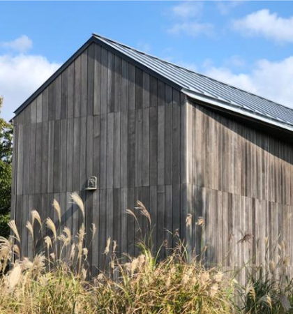
수풍석 박물관은 ‘명상의 공간으로서의 뮤지엄’ 으로써 자연을
경험할 수 있는 건축물로 구현되었습니다.
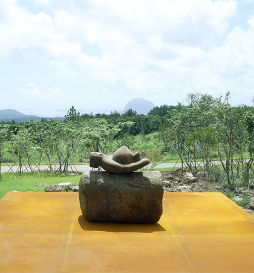
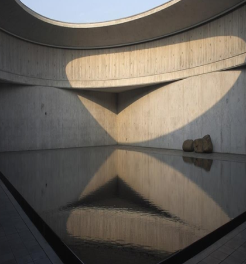
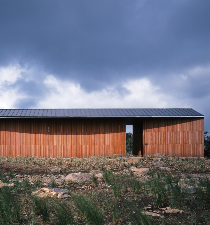
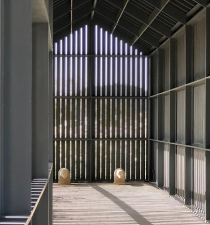
사방이 막힌 공간. 고요한 수면을 보고 있노라면
물은 자연의 모든 것과 공명하고 있고 해와 바람과 하늘의 움직임을 고스란히 담아내며,
자신의 표면에서 새로운 공간을 다시 생성해내고 있는 것만 같습니다.
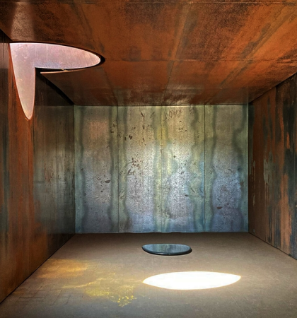
살아있는 건축, ‘이타미 준’의 제주도 수(水)∙풍(風)∙석(石)
제주의 빛을 담다,이타미 준의 수풍석 박물관
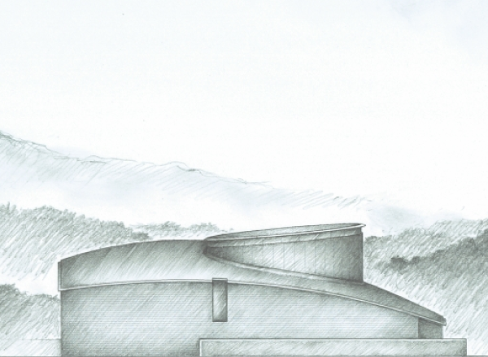
수풍석 박물관은 건축이 매개하는 인간과 자연의 관계를 보여주고 있습니다. 자연의 소리를 듣고, 그들에게 대답하는 하나의 몸짓으로서의 작업. 이를 통해 자연과 인간은
이어지고, 제주의 자연과 오롯이 소통할 수 있는 박물관에는 건축가 이타미 준의 삶, 건축물의 삶이 살아 숨 쉬고 있습니다. 공간에 따뜻한 체온을 불어넣는 건축가
‘이타미 준’의 자연주의 철학을 담은 수풍석에서 고요하고 평온한 자연을 경험할 수 있습니다.